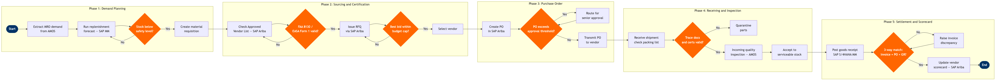

| Step | L4 Step Name | KPI / Target | Pain Point / Risk | Gate |
|---|---|---|---|---|
| 1.1 | Extract aircraft parts demand from MRO system | Forecast accuracy ≥92% (actual vs planned consumption within 30-day window) | AMOS demand signals are not always linked to long-range MRO event schedules, causing reactive spot-buy procurement that inflates unit cost by 20–40% | |
| 1.2 | Run inventory replenishment forecast in SAP MM | Stockout rate ≤1.5% of demand events; safety stock coverage ≥14 days for AOG-critical parts | Safety stock parameters are manually maintained and rarely updated when fleet mix changes (e.g. introduction of new variant), leading to chronic under-stocking of variant-specific parts | |
| 1.3 | Review reorder triggers and approve requisition list | Requisition approval cycle time ≤4 hours for AOG-critical parts; ≤48 hours standard | Manual approval queues during shift changes cause delayed AOG responses; no automated escalation when AOG-flagged requisitions remain unactioned beyond 1 hour | ⚠ |
| 1.4 | Create material requisition and attach technical specs | Requisition completeness rate ≥98% (no return-for-correction by procurement) | Part number supersession data from Boeing Toolbox is not auto-synced to SAP Ariba, causing requisitions for obsolete P/Ns that vendors cannot supply | |
| 2.1 | Verify part source against Approved Vendor List | AVL coverage ≥95% of recurring part numbers; AVL review cycle ≤12 months per vendor | AVL is maintained in SAP Ariba but not automatically cross-checked against FAA ASAP (Aviation Supplier Accreditation Program) suspension lists, creating compliance exposure | |
| 2.2 | Validate airworthiness certification for each vendor | Certificate validation cycle ≤2 hours; zero parts accepted without valid airworthiness release document | Counterfeit parts risk is elevated for high-demand Boeing 737 consumables; manual certificate checks against FAA ACSEP database are time-intensive and inconsistently applied across stations | ⚠ |
| 2.3 | Issue RFQ to certified vendors via SAP Ariba | RFQ response rate ≥80% from invited vendors; RFQ-to-quote cycle ≤24 hours for standard parts, ≤4 hours for AOG | AOG events require verbal quotes followed by retroactive PO creation, bypassing SAP Ariba controls and creating audit gaps under FAR Part 145 supplier documentation requirements | |
| 2.4 | Evaluate vendor bids on price, lead time, and certs | Negotiated savings vs. list price ≥8% on non-contracted parts; lead time commitment variance ≤10% | Lowest-price selection without lead time weighting frequently results in late deliveries that trigger AOG events; no automated score weighting enforced in SAP Ariba evaluation templates | ⚠ |
| 3.1 | Create purchase order with full part traceability data | PO first-time-right rate ≥97% (no revision required post-vendor acknowledgement) | INCOTERMS and hazardous material shipping codes (IATA DGR compliance for rotable parts containing hydraulic fluid) are manually entered, leading to customs clearance delays at international stations | |
| 3.2 | Route PO through financial approval workflow | PO approval cycle ≤1 business day for values ≤$50K; ≤4 hours for AOG regardless of value | Approval delegation matrices in SAP FI/CO are not updated when managers are on leave, causing approval bottlenecks that delay AOG resolutions beyond IATA AHM 730 target resolution windows | ⚠ |
| 3.3 | Transmit approved PO and confirm vendor acknowledgement | Vendor acknowledgement receipt ≤4 hours of PO transmission; acknowledgement rate ≥99% | Some MRO and rotables vendors still require fax or email PO transmission; SAP Ariba supplier portal adoption is ~70%, leaving 30% of POs outside automated acknowledgement tracking | |
| 4.1 | Receive parts shipment and verify packing list | Receiving dock processing time ≤2 hours per shipment; quantity accuracy ≥99.5% | AOG parts shipped via freight forwarder sometimes arrive without correct customs clearance documentation at non-hub stations, causing hold delays that negate the benefit of expedited shipping | |
| 4.2 | Validate airworthiness release documents on receipt | Documentation rejection rate ≤0.5% of line items received; zero parts accepted with missing trace-back documentation | AMOS certificate module does not validate 8130-3 document numbers against FAA online registry in real time; manual spot-checks miss approximately 3% of certificate anomalies per internal audit | ⚠ |
| 4.3 | Perform incoming quality inspection per IPC criteria | Incoming inspection pass rate ≥99.2%; suspect unapproved parts reported to FAA per AC 21-29D within 24 hours | Tooling calibration records required for dimensional inspection are tracked in a separate CMMS that is not integrated with AMOS, creating manual cross-reference steps that slow AOG part acceptance | |
| 4.4 | Accept serviceable parts to bonded stores or quarantine | Bin accuracy rate ≥99.8%; quarantine disposition completed within 5 business days | Bin location data in AMOS does not sync with warehouse management in SAP MM in real time, requiring nightly batch jobs that cause daytime inventory location discrepancies at high-volume line stations | |
| 5.1 | Post goods receipt and update inventory in SAP MM | GR posting lag ≤4 hours from physical acceptance; GR accuracy rate ≥99.5% | Back-dated GR postings to correct receiving errors distort accrual reporting in SAP FI/CO and trigger SOX compliance flags during month-end close | |
| 5.2 | Execute 3-way invoice match and approve payment | 3-way match auto-approval rate ≥85%; invoice-to-payment cycle ≤30 days net; dispute resolution ≤10 business days | Vendor invoices often include freight and handling surcharges not captured on the original PO, causing systematic 3-way match failures for ~12% of parts invoices and manual intervention by AP | ⚠ |
| 5.3 | Update vendor performance scorecard and close PO | Vendor scorecard completion rate ≥95% per quarter; suppliers scoring <70/100 reviewed for AVL status within 30 days | Scorecard data is manually compiled from AMOS, SAP MM, and SAP FI/CO with no automated feed; quarterly compilation takes 3–5 days and is often deprioritised during AOG-heavy periods, reducing scorecard coverage below 60% |